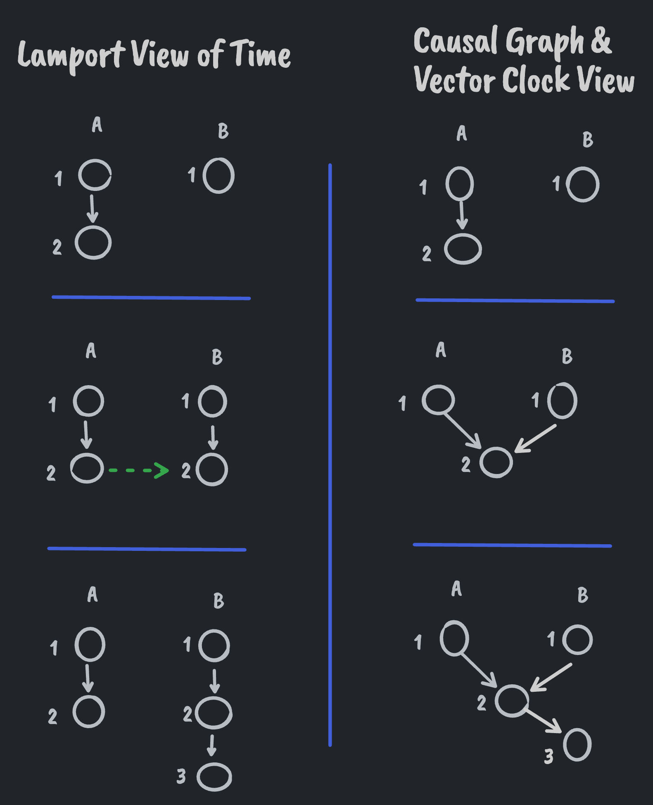

Do LWW Registers Need Vector Clocks or Causal Graphs? 💭
Published 2022-10-18Short answer: No. When it comes to a LWW register, Lamport clocks offer all the guarantees we need. Guarantees provided by other clock types are discarded during the merge phase of LWW.
A last write wins register is a register where the "last" write always wins. Determining when a write happens is usually done via a logical clock. Lamport clocks, vector clocks and causal graphs are a few options here. Lamport clocks being the simplest option.
While a Lamport clock is simple it has a few drawbacks. When comparing two Lamport clocks from two different nodes in a distributed system, we can't tell if an event happened strictly before another event or not. In other words, if a Lamport clock from system A is less than a Lamport clock from system B, A either happened before or at the same time as B. We do know, however, that B did not happen before A.
From the original paper:
We state this condition more formally as follows.
Clock Condition. For any events a, b: if a---> b then C(a) < C(b).
Note that we cannot expect the converse condition to hold as well, since that would imply that any two concurrent events must occur at the same time
Explored in more detail in this post: Lamport Clock.
This is the case since the only thing being communicated between peers in the network is a counter. When one peer syncs with another, their counters will be moved up to the max value between the two, ensuring all events with a larger counter are never before events with smaller counters.

Pictured above, the Lamport view of time does not record that event 2 from node A caused event 3 on node B. The Lamport view only ensures that, after A and B did exchange events, B would not time stamp any new events earlier than what it received from A. Causal graphs and vector clocks, on the other hand, record this information.
Why is Lamport Sufficient?
Why is this behavior sufficient for LWW and why do we not need a vector clock or causal graph for LWW registers?
Because of how LWW resolves conflicts. If there are concurrent edits, only one of those edits can be chosen. If we always pick the edit with the largest Lamport timestamp then we're always picking an edit that could not have happened before the other edit. I.e., it doesn't matter if clock A was strictly before or concurrent with clock B. In both cases, we'd choose B. As such, we don't need the extra causal information provided by other clock types.
Multi-value registers, on the other hand, do need something more sophisticated. If we used a Lamport timestamp for a multi-value register then our registers could never say when a concurrent edit was resolved.
To illustrate, see the final panel from the diagram above. A multi-value register based on a Lamport clock would show both values A(2) and B(3). A multi-value register based on a vector clock or causal graph would only show the value B(3) since we know B(3) happened after, and not concurrently with, A(2).
Many LWWs
If you have a system that is comprised of many LWW registers then you may want to start considering keeping a causal history.
The reason here is to try to maintain some transactional guarantees. While LWW throws most of the guarantees of a transaction out the window during the merge step, you can reduce the impact of this at merge time when knowing the full causal history of the system.
To be explored in a later post.